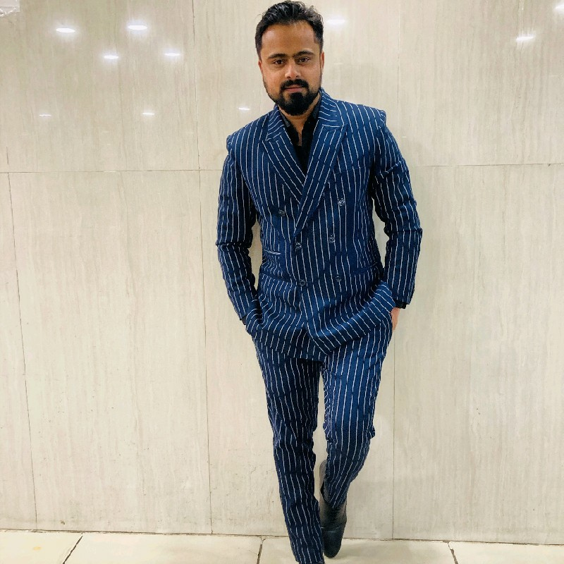

Summary
Customer Success and Academic Excellence Manager, Academic Coordinator and educator with a comprehensive Computer Science background. Expertise in leading curriculum design, teacher training, school operations, managing events and leading campaigns to ensure success and achieve departmental and management goals.
Restless Intellectual known for creative thinking with strong ability to address complex problems with simple, actionable, cut-through solutions. assessments, differentiated instructions, metacognition, IEP development and student engagement acumen. Develop and execute comprehensive educational plans in multicultural school. Maximize performance by implementing appropriate standards through analysis of details to gain understanding of emerging best practices and legislation. Expertise includes development and instruction of k-12 school students, engaging diverse student populations and real-world learning applications.
Work Experience
-
Customer Success Manager- UOLO Edtech pvt ltd
- Responsible for school servicing success with robust operation excellence
- Ensure handling the schools as per the service KPIs committed to the schools
- Work closely with the training team to conduct teacher training, allocate trainers, plan schedules, etc
- Coordinate with the school management regularly to ensure customer success wherever required
- Ensure timely reporting to the KDMs/Principals about the success of the program and its delivery
- Coordinate with the school teachers regularly to ensure smooth delivery of the program wherever required
- Drive School Retention and Collection
- Take ownership and end-to-end accountability for resolving any school-related issues
- Create and manage a strong reputation by demonstrating consistent and clear communication between internal and external parties
-
Academic Excellence Manager- Leadership Boulevard Pvt ltd
- Ensuring the Academic Implementations of Schools across 13 Cities (UP & UK region).
- Ensuring Academic Interventions for over 6000 Students.
- Training and Coaching over 200+ Teachers.
- Improved working relationship between programs and campus.
- Ensuring the implementation and execution of the program by conducting Teacher Development Workshops, Observation and Coaching Visits, enabling teachers to adapt and implement curriculum using Integrated System.
- Meeting and coaching the Owner and Principal of the school, on implementation parameters and rubrics.
- Supporting Schools in Designing Academic Calendar, Time Table, Events Planning.
- Supporting Schools in generating more admissions through show casing the Students' Mastery achieved across various verticals.
Education